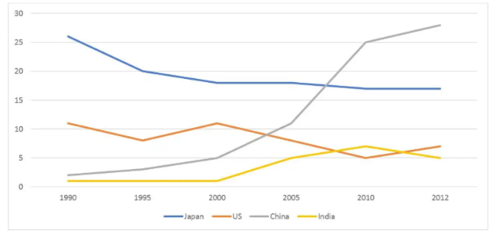
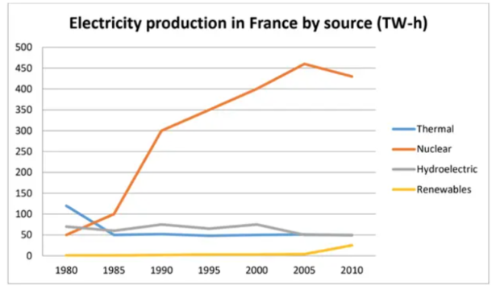

Đề bài
WRITING
WRITING
Exercise 1
The line graph shows the percentage of Australian exports to four countries between 1990 and 2012. Summarise the information by selecting and reporting the main features, and make comparisons where relevant.

Exercise 2
The line graph shows electricity production in France measured in terawatt-hours from 1980 to 2010. Summarise the main features and compare Thermal, Nuclear, Hydroelectric and Renewables.

Đáp án / dàn ý tham khảo
Exercise 1 overview: China rises dramatically while Japan loses share; the US and India remain much lower.
Exercise 2 overview: Nuclear power becomes dominant, while the other sources remain far lower or decline.
Bài làm
Submit your link here (Exercises 1 & 2):
Số từ: 0